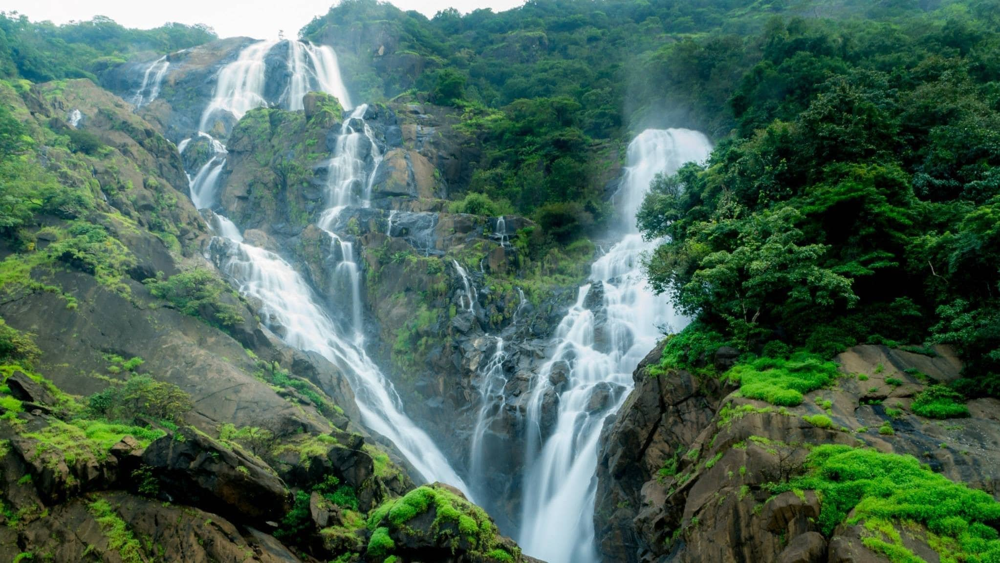

The nearest rail station accessible by road to the falls is Castle Rock, Uttara Kannada, Karnataka. Visitors could get in a train from here and disembark at the Dudhsagar stop. The Dudhsagar rail stop is not a station where passengers can expect a platform. Passengers and visitors have to climb down the steep ladder of the rail compartment in a short 1-2 minute unscheduled stop. From this rail stop, visitors have to walk about a kilometre on the tracks to arrive at the falls. While the walk itself is something unexpected for a popular tourist destination, there is a 200 m train tunnel that is totally dark which makes the walk a bit tougher. Recently Indian Railways has banned people from boarding/deboarding passengers at Dudhsagar railway, the same is considered to be an offence under the Railway regulations.